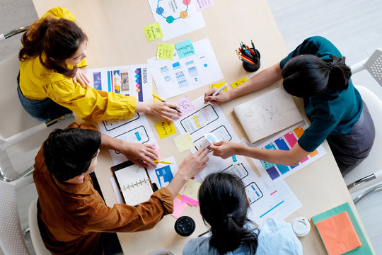

Een overzicht van projecten die ik heb gedaan tijdens mijn studie aan UNASAT.

Tijdens mijn studie aan UNASAT heb ik een prototype ontwikkeld met als thema "Better Future", waarbij ik met behulp van een Arduino een oplossing heb ontworpen voor een probleem dat in de toekomst kan voorkomen. Het project duurde ongeveer 3 tot 4 maanden en werd uitgevoerd in teamverband. Samen hebben we een fire and gas detection system ontwikkeld dat bedoeld is om vroegtijdig brand en gevaarlijke gassen te detecteren en zo de veiligheid te verbeteren. Tijdens dit project heb ik gewerkt aan het ontwerpen, testen en verbeteren van het systeem, en heb ik mijn technische kennis en samenwerkingsvaardigheden verder ontwikkeld.